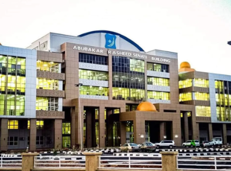
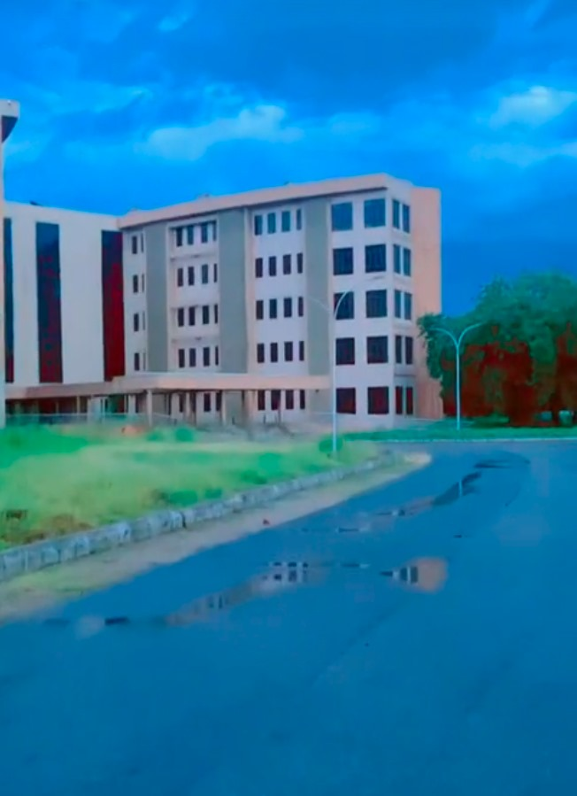

Bayero University, located in Kano, Nigeria, is one of the leading institutions of higher education in the country. Established in 1975, it offers a wide range of undergraduate and postgraduate programs across various fields, including humanities, sciences, engineering, health sciences, and social sciences.
The university is known for its commitment to academic excellence, research, and community service. It has a diverse student population and provides various facilities, such as libraries, laboratories, and recreational areas, to support students' learning and development.
Bayero University also emphasizes cultural and extracurricular activities, encouraging students to engage in sports, clubs, and organizations that promote personal growth and social interaction.
BUK Senate building

The Senate Building at Bayero University, named Abubakar Rasheed Senate Building is an important structure that serves as the administrative hub of the university. It houses the offices of key university officials, including the Vice-Chancellor and other members of the university's administration. The building is also used for meetings, conferences, and other official gatherings.
Architecturally, the Senate Building is designed to accommodate the administrative functions of the university while providing a conducive environment for decision-making and governance. It plays a crucial role in the overall management and organization of the university's activities and policies.
BUK Student Affairs
The BUK student affairs provides support in areas like academic advising, counselling services, career development,and extracuricullar activities. They often organise events, workshops, and programs that enhance the overall student experience.
BUK Accommodations

Accommodations as we know play a really vital role in the overall in the academic status of a student. BUK accommodations offer comfort, security and the ability to meet new people that can change our lives in the near future.
Our favorite hostel is the foreigners hostel. This just shows that BUK accepts all. This hostel has a kitchen and toilet in each room so as to make living comfortable and conducive for the foreigners who decide to join our prestigous school that might me miles away from their home. It is made to make them feel at home away from home.
FoC Lecturers
At faculty of computing, we have amazing lecturers with different backgrounds that come together to perform various tasks. They come from various departments, they are responsible for delivering lectures,conducting seminars,and guiding students in their studies.They provide students with lecture notes.Each level of each department has a level coordinator that is like a school parent. They play a crucial role in shaping academic experience and excellence.